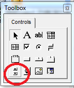
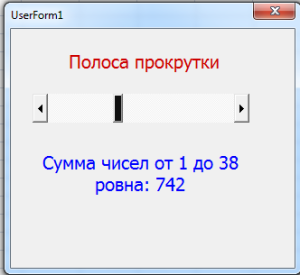

августа 21, 2015
августа 21, 2015  admin
admin Элемент управления ScrollBar
августа 21, 2015 admin
Элемент управления ScrollBar представляет собой вертикальную или горизонтальную полосу, по краям которой расположены кнопки прокрутки, а внутри перемещается бегунок.

рис . 1.1 Элемент управления ScrollBars на панели ToolBox

рис. 1.2 Элемент управления ScrollBars на форме

рис. 1.3 Пример элемента управления ScrollBars на форме
VBA Объект ScrollBar удобно использовать, когда нужно увеличить или уменьшить диапазон. Так, можно с его помощью задавать диапазон для вычисления суммы чисел, или, в зависимости от положения ползунка менять цвет текста. Понятно, что в этом случае удобно использовать цикл for. Примером использования объекта ScrollBar VBA может служить регулятор громкости, контраста и так далее.
Базовые свойства класса ScrollBar VBA
Max и Min – данные свойства позволяют задать максимальное и минимальное значение, которые вы сможете определить используя данные элемент управления. Свойство принимает только целые значения в диапазоне от −32 767 до +32 767. Вы можете задавать значения как в прямом порядке (от меньшего к большего) так и в обратном (от большего к меньшему). В таких случаях ползунок нужно будет тянуть в том или ином направлении.
SmallChange – свойство vba принимает целое значение, которое определяет, на какую величину будет перемещаться ползунок при нажатии на кнопки прокрутки.
LargeChange – как и свойство SmallChange позволяет задать шаг перемещения ползунка при нажатии на полосу прокрутки. Значения могут быть в диапазоне от −32 767 до +32 767, по умолчанию значения равны для обоих свойств 1.
Orientation – свойство позволяет указать ориентацию ползунка – горизонтальную или вертикальную. По умолчанию значение ровно 1 – ориентация определяется автоматически исходя из параметров формы, то есть, как полоса прокрутки умещается на объекте UserForm. Можно и явно указать ориентацию объекта ScrollBar, -1 – горизонтальная ориентация и 0 – вертикальная.
Visible – собственно, определяет видимость vba компонента ScrollBar, значение true установлено по умолчанию – объект видим, и false – скрываем элемент управления от глаз пользователя.
Value – позволяет получить значение ползунка, в зависимости от его положения.
Как и большинства элементов управления, основным событием для ScrollBar VBA является событие Change, которое возникает при перемещении ползунка.
Теперь настало время приступить к практике
Откройте редактор Visual Basic (Alt + F11), и в окно редактора Проектов добавьте новую форму и назовем ее ScrollForm
Теперь на поверхности формы нам нужно расположить следующие элементы управления:
Label1 – метка, в которой пропишем текст “Полоса прокрутки”
ScrollBar1 – полоса прокрутки, которая размещается под меткой, она должна быть горизонтальной. С ее помощью мы будет задавать диапазон значений от 1 до 100, и потом будем вычислять сумму заданных чисел.
Label2 – вторая метка, удалите в ней весь текст, в ней мы будет отображать результат суммирования.
см. рисунок 1.3
Теперь в редакторе кода для формы пропишем следующие процедуры:
Private Sub ScrollBar1_Change()
Dim summ
summ = 1 ‘ вычисляем сумму чисел
For i = 1 To ScrollBar1.Value
summ = summ + i
Next
Label2.Caption = “Сумма чисел от 1 до ” & ScrollBar1.Value & ” ровна: ” & summ
End Sub
Private Sub UserForm_Initialize()
Dim summ
summ = 1 ‘ вычесляем сумму чисел
For i = 1 To ScrollBar1.Value
summ = summ + i
Next ‘ параметры первого текстового поля
Label1.FontSize = 15
Label1.ForeColor = &HCD
Label1.TextAlign = fmTextAlignCenter
‘ параметры полосы прокрутки
ScrollBar1.Min = 1
ScrollBar1.Max = 100
‘ параметры второго текстового поля
Label2.FontSize = 15
Label2.ForeColor = &HFF0000
Label2.TextAlign = fmTextAlignCenter
Label2.Caption = “Сумма чисел от 1 до ” & ScrollBar1.Value & ” ровна: ” & summ
End Sub
ScrollBar1_Change – тут происходит обработка события Change. В цикле происходит суммирование чисел от 1 до ScrollBar1.Value. Тут ScrollBar1.Value содержит выбранное значение на полосе прокрутки, результат суммирования будет хранить переменная summ. Также в свойство Caption объекта Label2 записывается результат суммирования.
UserForm_Initialize – тут происходит определение начальных свойств при инициализации формы. Размер и текст меток, задается минимальное (один) и максимальное (сто) значение для полос прокрутки. Тут также используется цикл для суммирования значений.
И так, давайте просуммируем: мы рассмотрели пример использования объекта класса ScrollBar VBA языка, который позволяет добавлять на поверхность формы UserForm полосу прокрутки.
Пример можно скачать здесь